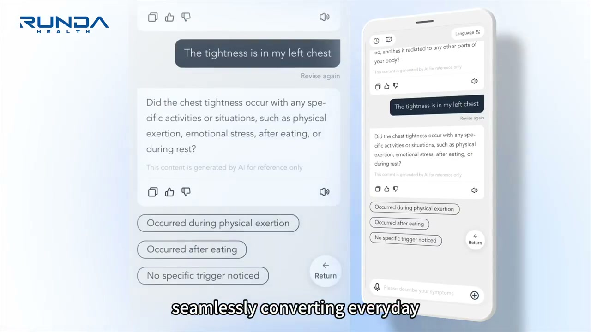
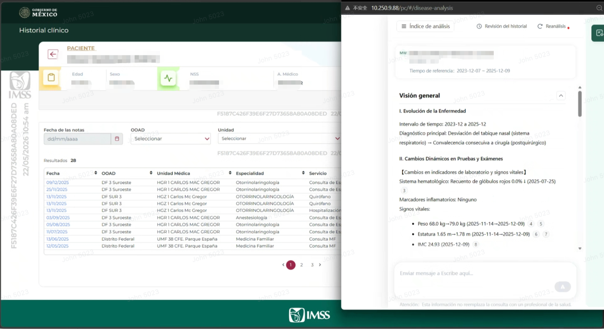

01 / Customer context
Where is scarce clinical time being lost today?
Documentation. Fragmented data. Repeated intake. Late quality checks. Each one reduces time available for care.
02 / west china outcome
Make time visible at scale.
At West China Hospital, documentation AI supported a 4,900-bed clinical operation.
03-1 / why Runda · company strength
Healthcare depth.
Delivery at scale.
Runda combines deep healthcare experience, a nationwide delivery footprint, and one accountable team from product to implementation.
27
years
in healthcare
in healthcare
03-2 / WHY RUNDA · CDx
Traceability, made visible.
Original clinical text becomes computable data through inspectable perception, mapping and deterministic rules.
10B+Governed data volume
100K+Medical cleaning rules
≥95%Field extraction accuracy
01 / Input
Original data
Free text stays connected to source context.
Patient reports chest pressure after exertion. Prior note mentions elevated blood pressure. Lab result imported from source system.
02 / Structure
Atomic variable matrix
Granular facts make narrative data computable.
SiteChest
FeatureSymptom
ValuePressure on exertion
UnitNarrative term
03 / White-box engine
Three visible layers
Each transformation remains separate and inspectable.
L1PerceptionRunda LLM 14B
Parses text into atomic variables.
L2MappingLLM 7B + Ontology
Aligns facts with medical standards.
L3ReasoningVisual rule engine
Applies deterministic, auditable logic.
04 / Output
Governed recommendation
Every output carries its evidence chain.
Prioritize clinical review
- Relevant facts summarized
- Applied logic visible
- Clinician decides
SourceTimeRule
One governed foundationFour uses
For AIClean variable matrices
For researchTraceable cohort data
For quality controlVisible rule engines
For interoperabilityMapped medical ontologies
01
Before the visit2 clinical agents
Patient journey
Clinical agent applications
Understand the patient before the visit begins.
Ask the right questions early and keep screening and follow-up connected.
Ask before the visit01 / 02
Clinician reviewAI Pre-Consultation
Asks adaptive questions before the visit, then gives the clinician a structured summary.

- Input
- What the patient says and approved history
- Intelligence
- Asks the next useful question
- Clinical value
- A clear summary before the visit
06 / selected agent · AI Pre-Consultation
Ask earlier. Arrive prepared.
Guide the patient through adaptive questions before the visit, then hand the clinician a structured summary.
Open live demo ↗Mexico · Public social-security network
Two years of records.
One reviewable timeline.

For international context
Mexico's national social-security institutionHealthcare and social protection across one of Latin America's largest public networks.78Mpeople covered
1,700+facilities
~15 secreported analysis time

China · National Medical Center
Make time visible
at scale.
Documentation AI supported a 4,900-bed clinical operation.For international context
4,900-bed national benchmark hospital7.6M annual outpatient visits · 220K annual surgeries · A++ national performance rating for six consecutive years.10,000records per day
2.32M+records generated
15,584 hsaved per week
China · Tertiary cardiovascular specialist hospital
One clinical context.
Seven stages of care.
For international context
500-bed cardiac specialty centerA whole-hospital cardiovascular model serving more than 300,000 surgery or catheterization patients.1 secfastest record generation
2.7%record modification rate
~223 hsaved per week

China · University medical center
High-risk signals become
one traceable decision view.
For international context
4,360-bed university medical center3.5M+ annual outpatient and emergency visits · pioneer of China's first chest pain center.97%reported accuracy
99.8%guideline compliance
0missed high-risk cases reported
Not four isolated pilots
Proven across
real clinical environments.
300+AI and smart-hospital sites
4,000+healthcare institutions served
Different systems. Different specialties. The same requirement: clinical value that can be inspected and measured.
Keep the hospital in control
Runs inside an approved local environment.
Connect to the systems the hospital already trusts. Start with one bounded workflow, retain the data boundary, and expand only when the value is proven.
Approved hospital environment
Local / Private / Customer-approvedHISEMRLISRIS
→approved
connection
connection
→trusted
context
context
→start
bounded
bounded
Delivery ownership
RundaClinical AI, workflow design and value measurement
Compute partnerInfrastructure and technical ecosystem
Local partnerLocalization, integration and on-site support
HospitalGovernance, data scope, users and acceptance
01Pre-installation validation→02Go-live acceptance→03Measured value delivery
09 / local proof of concept
One workflow. One data scope. One measurable result.
Measure more than "it runs"
Clinical value · Time saved · Quality · Adoption · Integration · Local adaptation
A bounded route to a local decision
Select→Connect→Validate→Decide
10 / discussion
Where should we prove value first?
One workflow · One proof · One decision